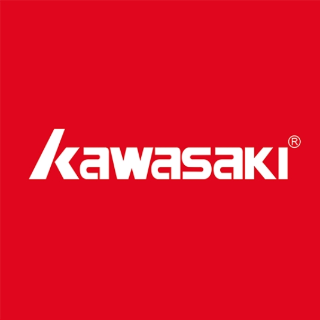

王均博 Felix
专注市场营销、内容运营与品牌增长，用内容策略连接用户、品牌和转化结果。
在职看机会中
Growth Timeline
发展时间线与关键节点
从广告学训练到平台内容运营，再到品牌品类增长，持续围绕内容、用户与转化建立可复用的方法。
-
汕头大学
广告学系统学习广告策划、市场营销、平面设计与新媒体广告创意；担任校级项目负责人，并获得省级大创奖。
-
美图（实习）
内容运营参与美图秀秀内容生态运营，负责站内资源位推广、创作者邀约、素材创作指南与主题征稿活动，累计拓展 2k+ 站内素材，沉淀 400+ 优质素材。
-
小红书（实习）
用户增长运营对接校园与政务渠道活动，搭建 140+ 个 H5 活动落地页，协同产品、设计和业务侧优化活动玩法与转化路径。
-
长利高果品牌服务
品类内容运营组长围绕灯具消费决策场景，主导内容策划、达人合作与数据优化，以高转化内容提升品牌声量、用户种草效率及大促品类增长。
-

川崎 Kawasaki
市场营销围绕羽毛球服及球包品类，搭建抖音与小红书内容增长链路，统筹达人、内容、投流与数据复盘，推动产品从种草曝光到搜索进店的持续增长。